Introduction and Newton-Cotes
Contents
Introduction and Newton-Cotes¶
CBE 20258. Numerical and Statistical Analysis. Spring 2020.
© University of Notre Dame
Reference: Chapters 15 and 16 in McClarren (2018). There are two copies in reserve at the library.
# load libraries
from scipy import integrate
import numpy as np
import matplotlib.pyplot as plt
from matplotlib.patches import Polygon
Learning Objectives¶
After studying this notebook, completing the activities, and asking questions in class, you should be able to:
Draw a sketch to illustrate the main idea behind midpoint, trapezoid and Simpson rules, or identify the rule name from a sketch
Derive the error order for midpoint and trapezoid rules from a Taylor series expansion
Approximate a definite integral using Newton-Cotes formulas or quadrature rules in Python
Motivating Example and Main Idea¶
Often in engineering, we want or must numerically approximate definite integrals.
Example: Integrate Normal Distribution¶
In a few weeks, we will learn how to model random phenomena with probability distributions. Often, standardized test scores follow a normal distribution, a.k.a., Gaussian distribution or bell curve.

These data (which I found online and did not verify… we are just using this as an example) suggest the average SAT score was 1500 with a standard deviation of 250 points. Briefly, mean is the average and standard deviation measures spread. We will mathematically define these quantities in a few class sessions.
Imagine we randomly select a student that took the SAT. What is the probability they received a score of \(a = 1800\) points? By assuming the SAT scores are normally distributed, we can express this probability as follows:
This is known as the probability density function (PDF). \(\mu\) is the mean and \(\sigma\) is the standard deviation. For our SAT data, \(\mu = 1500\) and \(\sigma = 250\). \(X\) is the outcome of the random experiment, which, for this example, is the SAT score of a randomly selected person. \(X\) is capital because it is a random variable. We will formally study all of this in a few notebooks. I am sharing now just to help build comfort.
For convenience, I will use \(p(x)\) as shorthand for the PDF:
Below is a Python function to evaluate the probability density function. Notice I created a lambda function my_p with the mean and standard deviation for the SAT example.
def normal_pdf(x,mean,stdev):
'''Probability density function (PDF) for normal distribution
Arg:
x: outcome value
mean: mean
stdev: standard deviation
Return: probability
'''
assert stdev > 0.0
var = stdev**2
return (1/np.sqrt(2*np.pi*var)) * np.exp(-(x - mean)**2 / 2 / var)
# Integrate numerically. We'll learn the details of how this works later in the class.
my_p = lambda x: normal_pdf(x, mean=1500, stdev=250)
Let’s calculate the probability a randomly selected test taker scored 1800. We just need to evaluate \(p(1800)\).
my_p(1800)
0.0007767442199328519
0.07% is a very small number! Often, we really want to ask what is the probability a random test taker scored \(a\) or less? We can write this as a definite integral:
We are integrating the probability density function \(p(x)\) from the lowest possible value, \(-\infty\), to \(a\). Wait, how do you get a negative SAT score?!?! This is a great practical point. We’ll learn in a few weeks that the normal distribution allows for random variable outcomes between \(-\infty\) and \(\infty\). But because the probability of really extreme scores is so low, we can still use the normal distribution for many problems, such as the SAT, with valid outcomes over only a finite range, e.g., 0 to 2400.
You decided to trust me on this point, although you are still a little skeptical. So, just substitute \(a=1800\), \(\mu = 1500\) and \(\sigma = 250\) and integrate? The integral looks really hard. I hope it is not on the next exam!
The integral above actually does not have an analytic solution except for some special cases. (You can show analytically that integrating from \(-\infty\) and \(\infty\) gives 1.) We need to integrate numerically, making it a great motivating example for the next few notebooks on numeric integration.
We first replaced the \(-\infty\) with \(-10000\),
and then integrated numerically using scipy.integrate.quad:
value, tol = integrate.quad(my_p,-10000,1800)
print("Integral value = ",value)
print("Integration tolerance (approximate error) = ",tol)
Integral value = 0.8849303297782916
Integration tolerance (approximate error) = 6.5792911954510715e-12
We can see that if we randomly selected an SAT test taker, there is a 88.5% probably they scored 1800 or less. Alternately, if someone scores 1800, we say they are in the 88th percentile. In the rest of this class, we will learn what quad and other scipy functions do “under the hood”.
Example: Let’s Revisit that Unbounded Assumption¶
The normal distribution assumes the random variable can have outcomes between \(-\infty\) to \(\infty\). But, for this year, valid SAT scores were between 0 and 2400. What is the error caused by approximating SAT scores with a normal distribution?
Home Activity
Using the normal distribution, compute the probability of a score between -10,000 and 0. Store your answer in the Python float ans_aii1.
# Add your solution here
Integral value = 9.865965575048534e-10
Integration tolerance = 1.874391547379387e-09
# Removed autograder test. You may delete this cell.
Home Activity
Using the normal distribution, compute the probability of a score between 2400 and 10,000. Store your answer in the Python float ans_aii2.
# Add your solution here
Integral value = 0.00015910859015752824
Integration tolerance = 9.36189270348194e-10
# Removed autograder test. You may delete this cell.
Home Activity
Write a sentence to defend or refute our choice to model SAT scores with a normal distribution.
Home Activity Answer:
Main Idea¶
We will approximate an integral by a sum with a finite number of terms: $\(\int\limits_a^b f(x)\,dx \approx \sum_{l=0}^{L}w_l f(x_l).\)$
The function \(f( )\) is evaluated at locations (nodes) \(x_l\). Each function evaluation is multiplied by weight \(w_l\) and then summed.
This approach is known as a quadrature rule or simply numerical integration. We will focus on two broad families of methods: Newton-Cotes formulas and Gaussian quadrature rules.
Connection back to Calculus II: Writing an integral as a finite sum is analogous to the definition of an integral as a Riemann sum. Therefore, just as in finite difference derivatives, we use finite mathematics to approximate the infinitesimals of calculus.
Newton-Cotes Formulas¶
This is a broad family of numerical methods that follow the same general recipe:
Fit a polynomial through the function evaluations.
Integrate the polynomial approximation exactly.
We will not discuss the general theory of Newton-Cotes formulas, but instead focus on three important methods commonly used.
1) Midpoint Rule¶
In the midpoint rule, we approximate the integral by the value of the function in the middle of the range of integration times the length of the region. This simple formula is $\(I_{midpoint} = h\, f\!\left(\frac{a+b}{2}\right) \approx \int\limits_{a}^b f(x)\,dx,\)\( where \)h = b-a$. We can demonstrate this with a graphical example:
# define and plot function
f = lambda x: (x-3)*(x-5)*(x-7)+110
x = np.linspace(0,10,100)
plt.plot(x,f(x),label="f(x)",color="blue")
# get current axes
ax = plt.gca()
## draw polygon
# define a and b
a = 2
b = 8
# evaluate midpoint
midpoint = 0.5*(a+b)
fmid = f(midpoint)
# estimate integral
Imid = (b-a)*fmid
print("Integral estimate = ",Imid)
# draw rectangle
verts = [(a,0),(a,fmid), (b,fmid),(b,0)]
poly = Polygon(verts, facecolor='0.8', edgecolor='k')
ax.add_patch(poly)
ax.set_xticks((a,b))
ax.set_xticklabels(('a='+str(a),'b='+str(b)))
# add labels
plt.xlabel("x")
plt.ylabel("f(x)")
plt.title("Midpoint Rule")
plt.show()
Integral estimate = 660.0
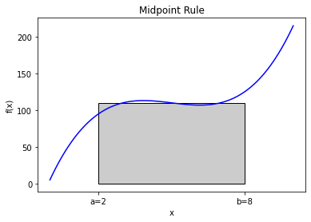
The resulting approximation is not terrible, but there are clearly parts of the function where the rectangle does not match the function well. We can do better than a rectangle that approximates the function as flat.
Home Activity
Copy the code from above to the cell below. Then modify the copied code to integrate \(g(x) = x(1-\sin(x))\) from \(a=3\) to \(b=7\) using the midpoint rule. Save the numeric approximation in the Python variable ans_bi. Hint: Use the function np.sin.
# Add your solution here
Integral estimate = 39.17848549326277
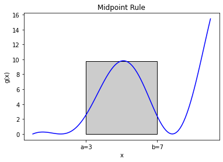
# Removed autograder test. You may delete this cell.
2) Trapezoid Rule¶
Main Idea and Graphical Example¶
Instead of approximating with a rectangle (midpoint rule), use a trapezoid:
Fit a line between \(a\) and \(b\). This is a polynomial (linear) approximation to \(f(x)\).
Integrate the polynomial exactly
The formula for this is $\( I_\mathrm{trap} \equiv \frac{h}{2}(f(a) + f(b)) \approx \int\limits_a^b f(x)\,dx,\)\( where \)h = b - a.$ Here is a graphical example on a polynomial function.
# define and plot function
f = lambda x: (x-3)*(x-5)*(x-7)+110
x = np.linspace(0,10,100)
plt.plot(x,f(x),label="f(x)",color="blue")
# get current axes
ax = plt.gca()
# draw polygon
a = 2
b = 8
verts = [(a,0),(a,f(a)), (b,f(b)),(b,0)]
poly = Polygon(verts, facecolor='0.8', edgecolor='k')
ax.add_patch(poly)
ax.set_xticks((a,b))
ax.set_xticklabels(('a='+str(a),'b='+str(b)))
# estimate integral
Itrap = (b-a)/2*(f(a) + f(b))
print("Integral estimate = ",Itrap)
# add labels
plt.xlabel("x")
plt.ylabel("f(x)")
plt.title("Trapezoid Rule")
plt.show()
Integral estimate = 660.0
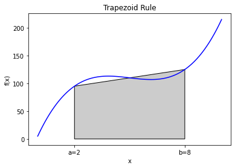
You can see in the figure that the approximation is not exact because the trapezoid does not exactly follow the function, but if \(a\) and \(b\) are close enough together it should give a good approximation because any well-behaved function can be approximated linearly over a narrow enough domain.
Home Activity
Copy the code from above to the cell below. Then modify the copied code to integrate \(g(x) = x(1-\sin(x))\) from \(a=3\) to \(b=7\) using the trapezoid rule. Save the numeric approximation in the Python variable ans_bii1.
### BEGIN HIDDEN SOLUTION
# define and plot function
g = lambda x: x*(1-np.sin(x))
x = np.linspace(0,10,100)
plt.plot(x,g(x),label="g(x)",color="blue")
# get current axes
ax = plt.gca()
# draw polygon
a = 3
b = 7
verts = [(a,0),(a,g(a)), (b,g(b)),(b,0)]
poly = Polygon(verts, facecolor='0.8', edgecolor='k')
ax.add_patch(poly)
ax.set_xticks((a,b))
ax.set_xticklabels(('a='+str(a),'b='+str(b)))
# estimate integral
Itrap = (b-a)/2*(g(a) + g(b))
print("Integral estimate = ",Itrap)
ans_bii1 = Itrap
# add labels
plt.xlabel("x")
plt.ylabel("g(x)")
plt.title("Trapezoid Rule")
plt.show()
### END HIDDEN SOLUTION
Integral estimate = 9.955467569577749
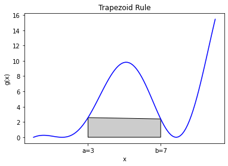
# Removed autograder test. You may delete this cell.
Trapezoid Rule with Multiple Pieces¶
That leads to a variation to the trapezoid rule (and any other rule for that matter). We can break up the domain \([a,b]\) into many smaller domains and integrate each of these. Here’s an example where we break \([a,b]\) into 4 pieces:
#graphical example of 4 pieces
# define polynomial and plot
f = lambda x: (x-3)*(x-5)*(x-7)+110
x = np.linspace(0,10,100)
plt.plot(x,f(x),label="f(x)",color="blue")
ax = plt.gca()
a = 2
b = 8
h = b - a
N = 4
# draw trapezoids and integrate
Itrap = 0.0
for i in range(N):
xleft = a+i*h/N
fleft = f(xleft)
xright = a+(i+1)*h/N
fright = f(xright)
Itrap += (h/N/2)*(fleft + fright)
verts = [(xleft,0),(xleft,fleft), (xright,fright),(xright,0)]
poly = Polygon(verts, facecolor='0.8', edgecolor='k')
ax.add_patch(poly)
ax.set_xticks((a,b))
ax.set_xticklabels(('a='+str(a),'b='+str(b)))
plt.xlabel("x")
plt.ylabel("f(x)")
plt.title("Trapezoid Rule with "+str(N)+" pieces")
plt.show()
print("Integral estimate with",N,"pieces = ",Itrap)

Integral estimate with 4 pieces = 660.0
Home Activity
Copy the code from above to the cell below. Then modify the copied code to integrate \(g(x) = x(1-\sin(x))\) from \(a=3\) to \(b=7\) using the trapezoid rule with \(N\) pieces. Per WolframaAlpha, the answer is 27.7314266795455… Determine the minimum number of pieces needed such that approximation, when rounded, matches the exact answer to one decimal place. Store your answer as an integer in ans_bii2.
# Add your solution here
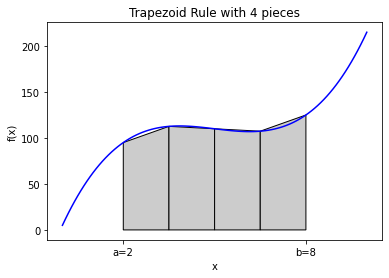
Integral estimate with 12 pieces = 27.650117867008063
# Removed autograder test. You may delete this cell.
General Purpose Function and Test Case¶
We can write a trapezoid rule function that will take in a function, \(a\), \(b\), and the number of pieces and perform this integration. Also, because the right side of each piece is the left side of the next piece, if we’re clever we can only evaluate the function once \(N+1\) times where \(N\) is the number of pieces.
The following function implements the trapezoid rule, and will produce a graph of the approximation when the parameter graph is set to true.
Home Activity
Study the code below. Write at least two questions to ask your neighbor during class.
Question 1:
Question 2:
def trapezoid(f, a, b, pieces, graph=False):
"""Find the integral of the function f between a and b using pieces trapezoids
Args:
f: function to integrate
a: lower bound of integral
b: upper bound of integral
pieces: number of pieces to chop [a,b] into
Returns:
estimate of integral
"""
# set integral sum to zero
integral = 0
# calculate total width
h = b - a
# plot true function
if (graph):
x = np.linspace(a,b,100)
plt.plot(x,f(x),label="f(x)",color="blue")
ax = plt.gca()
# initialize the left function evaluation
fa = f(a)
for i in range(pieces):
# evaluate the function at the right end of the current piece
fb = f(a + (i+1)*h/pieces)
# add to integral
integral += 0.5*h/pieces*(fa + fb)
# plot the current piece
if (graph):
verts = [(a+i*h/pieces,0),(a+i*h/pieces,fa), (a+(i+1)*h/pieces,fb),(a+(i+1)*h/pieces,0)]
poly = Polygon(verts, facecolor='0.9', edgecolor='k')
ax.add_patch(poly)
# now make the left function evaluation the right for the next step
fa = fb
# label plot
if (graph):
ax.set_xticks((a,b))
ax.set_xticklabels(('a='+str(a),'b='+str(b)))
plt.xlabel("x")
plt.ylabel("f(x)")
if (pieces > 1):
plt.title("Trapezoid Rule with " + str(pieces) + " pieces")
else:
plt.title("Trapezoid Rule with " + str(pieces) + " piece")
plt.show()
return integral
Home Activity
Run the code below.
Let’s test this method on a function that we know the integral of $\(\int\limits_0^\pi \sin x\,dx = 2.\)$
integral_estimate = trapezoid(np.sin,0,np.pi,pieces=4,graph=True)
print("Estimate is",integral_estimate,"while the actual value is 2")
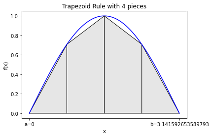
Estimate is 1.8961188979370398 while the actual value is 2
integral_estimate = trapezoid(np.sin,0,np.pi,pieces=50,graph=True)
print("Estimate is",integral_estimate,"while the actual value is 2")
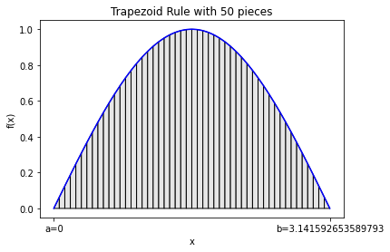
Estimate is 1.999341983076262 while the actual value is 2
Error Analysis¶
How does the error change as we increase the number pieces (i.e., decrease the step size \(h\))?
Home Activity
Run the code below.
pieces = 2**np.arange(0,6)
error = np.zeros(6)
count = 0
for p in pieces:
error[count] = np.fabs(trapezoid(np.sin,0,np.pi,pieces=p,graph=False) - 2.0)
count += 1
h = np.pi/pieces
plt.loglog(h,error,'o-')
slope = (np.log(error[0]) - np.log(error[-1]))/(np.log(h[0]) - np.log(h[-1]) )
plt.title("Trapezoid Rule Error: slope = " + str(slope))
plt.xlabel("h")
plt.ylabel("Absolute Error")
plt.show()
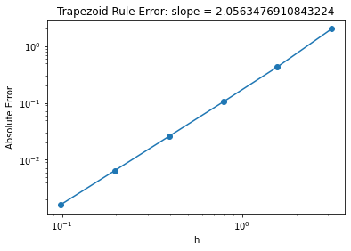
Similar to what we did for finite difference derivatives, we can plot the error versus number of pieces on a log-log scale. The error in the trapezoid rule that we observe is second-order in \(h\), because the slope of the error on the log-log scale is 2.
Class Activity
Go through the derivation below on the chalkboard.
We will now use a Taylor series to show why the slope is 2.
We can see that this is the expected error in the estimate by looking at the linear approximation to a function around \(x = a\): $\(f(x) = f(a) + (x-a) f'(a) + \frac{(x-a)^2}{2} f''(a) + O((x-a)^3).\)\( We can approximate the derivative using a forward difference: \)\(f'(a) \approx \frac{f(b) - f(a)}{h} + O(h),\)\( where \)h = b-a\(. Now the integral of \)f(x)\( from \)a\( to \)b\( becomes \)\(\int \limits_a^b f(x)\,dx = h f(a) + \int\limits_a^b (x-a) f'(a)\,dx +\int\limits_a^b \frac{(x-a)^2}{2} f''(a)\,dx + O(h^4).\)\( The integral \)\(\int\limits_a^b (x-a) f'(a) dx = \frac{(b-a)^2}{2}f'(a) = \frac{h^2}{2}\left(\frac{f(b) - f(a)}{h} + O(h)\right) = \frac{h}{2}\left(f(b)-f(a)\right) + O(h^3).\)\( Additionally, \)\(\int\limits_a^b \frac{(x-a)^2}{2} f''(a)\,dx = -\frac{h^3}{6} f''(a) = O(h^3).\)\( When we plug this into the original integral we get \)\(\int \limits_a^b f(x)\,dx = \frac{h}{2} (f(a) + f(b)) + O(h^3).\)\( This says that error in one piece of the trapezoid rule is third-order accurate, which means the error can be written as \)C h^3 + O(h^4)\(. However, when we break the interval into \)N\( pieces, each of size \)h = (b-a)/N\(, the error terms add and each piece has its own constant so that \)\(\sum_{i=1}^N C_i h^3 \leq N h^3 C_\mathrm{max} = (b-a)C_\mathrm{max} h^2,\)\( where \)C_\mathrm{max}\( is the maximum value of \)|C_i|\(. Therefore, the error in the sum of trapezoid rules decreases as \)h^2\(, which we observed above. This analysis can be extended to show that the error terms in the trapezoid rule only have even powers of \)h\(: \)\(\mathrm{Error} = C_2 h^2 + C_4 h^4 + \dots\)$
Simpson’s Rule¶
We will now take the idea of the trapezoid rule a step further by fitting a parabola between three points: \(a\), \(b\), and \((a+b)/2\). The formula for this is $\( I_\mathrm{Simpson} \equiv \frac{h}{6}\left(f(a) + 4 f\left(a + \frac{h}{2}\right) + f(b)\right) \approx \int\limits_a^b f(x)\,dx,\)\( where \)h = b - a.$
Footnote: This is sometimes called Simpsions 1/3 rule.
Quadratic Interpolation¶
Before examining Simpson’s rule, we need to quickly discuss quadratic interpolation. Let’s say I have evaluated the function \(g(x)\) at three points: \(a_1\), \(a_2\) and \(a_3\). I now want to approximate \(g(x)\) and any point \(x\) using quadratic interpolation.
def quadratic_interp(a,f,x):
"""Compute at quadratic interpolant
Args:
a: array of the 3 points
f: array of the value of f(a) at the 3 points
x: point to interpolate at
Returns:
The value of the linear interpolant at x
"""
answer = (x-a[1])*(x-a[2])/(a[0]-a[1])/(a[0]-a[2])*f[0]
answer += (x-a[0])*(x-a[2])/(a[1]-a[0])/(a[1]-a[2])*f[1]
answer += (x-a[0])*(x-a[1])/(a[2]-a[0])/(a[2]-a[1])*f[2]
return answer
Let’s return to the example \(f(x) = (x-3)(x-5)(x-7)+110\) to test our function.
f = lambda x: (x-3)*(x-5)*(x-7)+110
Now let’s test our quadratic interpolation formula. We’ll choose \(x=0\), \(x=1\), and \(x=2\) as the three node locations. We’ll start by evaluating our function \(f(x)\) at these three points.
x_nodes = np.array([0.0, 1.0, 2.0])
f_nodes = np.zeros(len(x_nodes))
# loop over elements of x_node
for i in range(len(x_nodes)):
# evaluate f() and store answer in f_nodes
f_nodes[i] = f(x_nodes[i])
# print to screen
print("f(",x_nodes[i],") =",f_nodes[i])
f( 0.0 ) = 5.0
f( 1.0 ) = 62.0
f( 2.0 ) = 95.0
Now let’s evaluate our interpolation function \(g(x)\) at these three points:
quadratic_interp(x_nodes, f_nodes, 0.25)
21.5
for i in x_nodes:
print("g(",i,") =",quadratic_interp(x_nodes, f_nodes, i))
g( 0.0 ) = 5.0
g( 1.0 ) = 62.0
g( 2.0 ) = 95.0
We see the quadratice interpolation \(g(x)\) is exact at the three nodes. Please verify this makes sense based on the formula for \(g(x)\).
Home Activity
Evaluate the original function \(f(x)\) and the quadratic interpolation approximation \(g(x)\) at \(x=0.25\). Record your answer in f_b_iii and g_b_iii. Use the same nodes as the example, i.e., do not modify x_nodes and f_nodes.
# Add your solution here
f( 0.25 ) = 21.828125
g( 0.25 ) = 21.5
# Removed autograder test. You may delete this cell.
You should see the quadratic interpolant is a good approximation, but not perfect.
The code below graphically explores \(g(x)\).
# plot true function in blue
a = 0
b = np.pi
x = np.linspace(a,b,100)
plt.plot(x,f(x),label="f(x)",color="blue")
# assemble nodes of three points, plot as circles
nodes = [a,0.5*(a+b),b]
fnodes = f(np.array([a,0.5*(a+b),b]))
plt.scatter(nodes, fnodes, marker='o',color='blue')
# plot polygon to visualize quadratic interpolation
ax = plt.gca()
ix = np.arange(a, b, 0.01)
iy = quadratic_interp(nodes,fnodes,ix)
verts = [(a,0)] + list(zip(ix,iy)) + [(b,0)]
poly = plt.Polygon(verts, facecolor='0.9', edgecolor='k')
ax.add_patch(poly)
# label axes
ax.set_xticks((a,b))
ax.set_xticklabels(('a='+str(a),'b='+str(b)))
plt.xlabel("x")
plt.ylabel("f(x)")
plt.title("Simpson's Rule")
plt.show()
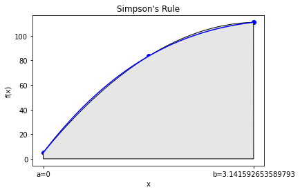
We can see the quadratic function fits \(f(x)\) really well. This is not that surprising, as \(f(x)\) is a cubic.
Home Activity
Copy the code above to below. Adapt the copied code to explore \(g(x) = x (1-\sin(x))\). Write a sentence to discuss the results.
# Add your solution here
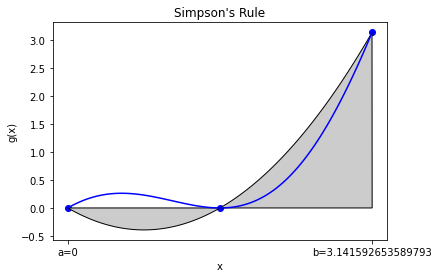
Home Activity Discussion:
General Purpose Function and Test Case¶
Home Activity
Study the code below. Write at least two questions to ask your neighbor during class.
def simpsons(f, a, b, pieces, graph=False):
"""Find the integral of the function f between a and b using Simpson's rule
Args:
f: function to integrate
a: lower bound of integral
b: upper bound of integral
pieces: number of pieces to chop [a,b] into
Returns:
estimate of integral
"""
# set integral counter to 0
integral = 0
# calculate total witdth
h = b - a
# compute and save 1/6
one_sixth = 1.0/6.0
# plot function
if (graph):
x = np.linspace(a,b,100)
plt.plot(x,f(x),label="f(x)",color="blue")
ax = plt.gca()
#initialize the left function evaluation
fa = f(a)
for i in range(pieces):
# evaluate the function at the right end of the piece
fb = f(a + (i+1)*h/pieces)
fmid = f(a + (i+0.5)*h/pieces)
integral += one_sixth*h/pieces*(fa + 4*fmid + fb)
# visualize piece
if (graph):
ix = np.arange(a+i*h/pieces, a+(i+1)*h/pieces, 0.001)
iy = quadratic_interp(np.array([a+i*h/pieces,0.5*(a+(i+1)*h/pieces+ a+i*h/pieces),a+(i+1)*h/pieces]),
np.array([fa,fmid,fb]),ix)
verts = [(a+i*h/pieces,0)] + list(zip(ix,iy)) + [(a+(i+1)*h/pieces,0)]
poly = plt.Polygon(verts, facecolor='0.9', edgecolor='k')
ax.add_patch(poly)
# now make the left function evaluation the right for the next step
fa = fb
# label plot
if (graph):
ax.set_xticks((a,b))
ax.set_xticklabels(('a='+str(a),'b='+str(b)))
plt.xlabel("x")
plt.ylabel("f(x)")
plt.title("Simpsons Rule with " + str(pieces) + " pieces")
plt.show()
return integral
Class Activity
Complete the activity on the handout.
We wrote a function. Now let’s test it by approximating:
integral_estimate = simpsons(np.sin,0,np.pi,pieces=3,graph=True)
print("Estimate is",integral_estimate,"while the actual value is 2")
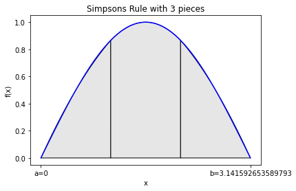
Estimate is 2.000863189673536 while the actual value is 2
Home Activity
Recompute the integral estimate with 50 pieces. Store the answer in ans_biii_50.
### BEGIN SOLUTION
integral_estimate = simpsons(np.sin,0,np.pi,pieces=50,graph=True)
print("Estimate is",integral_estimate,"Actual value is 2")
ans_biii_50 = integral_estimate
### END SOLTUON
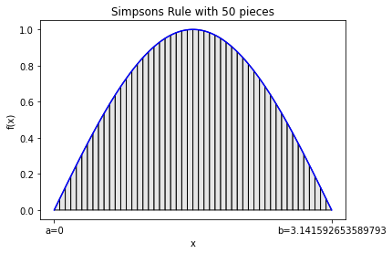
Estimate is 2.0000000108245035 Actual value is 2
# Removed autograder test. You may delete this cell.
Error Analysis¶
Home Activity
Run the code below.
pieces = 2**np.arange(0,6)
error = np.zeros(6)
count = 0
for p in pieces:
error[count] = np.fabs(simpsons(np.sin,0,np.pi,pieces=p,graph=False) - 2.0)
count += 1
h = np.pi/pieces
plt.loglog(h,error,'o-')
slope = (np.log(error[0]) - np.log(error[-1]))/(np.log(h[0]) - np.log(h[-1]) )
plt.title("Simpson's Rule Error: slope = " + str(slope))
plt.xlabel("h")
plt.ylabel("Absolute Error")
plt.show()
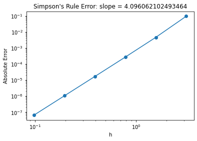
Simpson’s rule is fourth-order in the piece size. This means that every time I double the number of pieces the error goes down by a factor of \(2^4 = 16\).
Another Example: Approximating \(\pi\)¶
Class Activity
Run code below and discuss.
We can approximate \(\pi\) with the following integral:
integrand = lambda x: 4*np.sqrt(1-x**2)
simpsons(integrand,0,1,pieces = 4,graph=True) #actual value is 3.14159
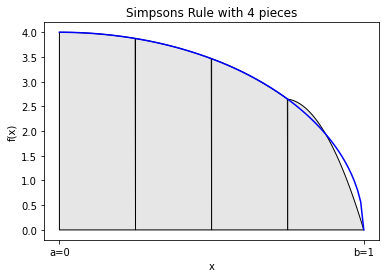
3.1211891697754175
Most of the error comes at \(x=1\). This is because the derivative of \(\sqrt{1-x^2}\) is singular at \(x=1\), which makes it difficult to build an accurate polynomial approximation.